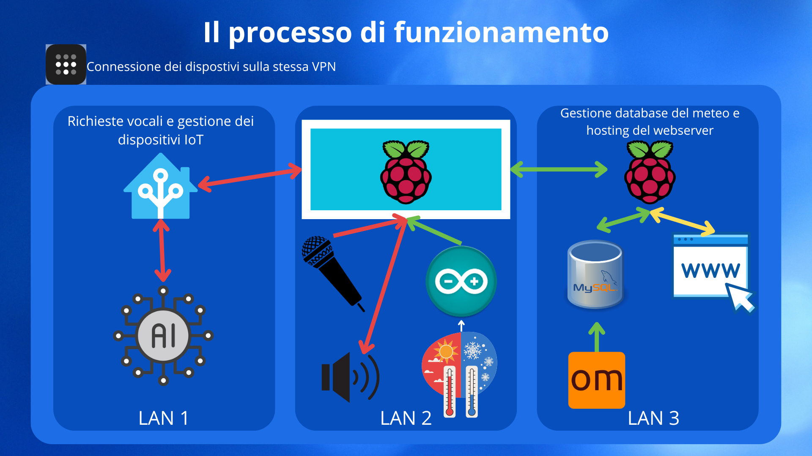

Architettura del Sistema
Il Cyber Reflection è progettato come un sistema distribuito che integra diversi componenti hardware e software per fornire un'esperienza utente interattiva e personalizzata. L'architettura del sistema è composta dai seguenti elementi principali:
- Arduino H7: Microcontrollore che raccoglie i dati ambientali (temperatura e umidità) utilizzando il sensore DHT11.
- Raspberry Pi Client: Dispositivo che funge da interfaccia principale dello specchio. Gestisce l'interazione vocale con l'utente, visualizza le informazioni sullo schermo e comunica con gli altri componenti del sistema.
- Raspberry Pi Server: Riceve i dati dai Raspberry Pi Client e li inoltra al server principale.
- Server Principale: Un PC che esegue Home Assistant per la gestione della logica di automazione e l'integrazione dei servizi.
Per connettere questi componenti in modo sicuro ed efficiente, il sistema utilizza una combinazione di connessioni cablate e wireless, e una rete privata virtuale (VPN) creata con Tailscale.
Rete VPN con Tailscale
Tailscale è una VPN mesh che semplifica la connessione tra dispositivi situati dietro NAT o firewall. Nel nostro sistema, Tailscale viene utilizzato per creare una rete privata tra il Raspberry Pi Server e il PC Server. Questo approccio offre diversi vantaggi:
- Sicurezza: Il traffico tra i dispositivi è crittografato, garantendo la riservatezza dei dati.
- Semplicità: Tailscale configura automaticamente le connessioni, eliminando la necessità di complesse configurazioni di port forwarding.
- Accesso remoto: Consente di accedere ai dispositivi da qualsiasi luogo, come se si trovassero sulla stessa rete locale.
Limitazioni di Arduino e soluzione: A causa delle limitazioni di compatibilità, Arduino non può partecipare direttamente alla rete Tailscale. Per ovviare a questo, Arduino e il Raspberry Pi Client sono connessi alla stessa rete locale (LAN). Il Raspberry Pi Client funge da ponte, ricevendo i dati da Arduino tramite la LAN e inoltrandoli al Raspberry Pi Server tramite la VPN di Tailscale.
Flusso di Comunicazione
Il diagramma seguente illustra il flusso di comunicazione tra i vari componenti del sistema:
- Raccolta dati: Arduino H7 raccoglie i dati da sensori ambientali (temperatura, umidità, ecc.) e li invia al Raspberry Pi Client tramite la rete locale.
- Interazione vocale: L'utente interagisce con il Raspberry Pi Client tramite comandi vocali. Il Raspberry Pi Client elabora questi comandi e può anche fornire risposte vocali.
- Trasmissione dati:
- Il Raspberry Pi Client (Specchio) invia i dati ricevuti da Arduino al Raspberry Pi Server tramite la rete locale.
- Quando viene rilevata la parola chiave di attivazione (wake word), il Raspberry Pi Client invia anche i dati utente (comandi vocali, ecc.) al PC Server tramite la VPN Tailscale.
- Elaborazione dati e risposte: Il PC Server (con Home Assistant) elabora i dati ricevuti, esegue la logica di automazione e invia le risposte al Raspberry Pi Client tramite la VPN Tailscale.
- Visualizzazione informazioni: Il Raspberry Pi Client (Specchio) visualizza le informazioni pertinenti (dati ambientali, risposte ai comandi vocali, ecc.) sullo schermo dello specchio.